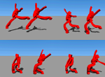
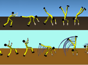
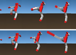
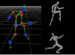
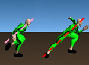
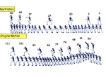
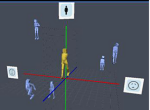

CG Animation
Introduction to My Research Papers
This page introduces major research papers and explains their contributions to computer graphics and related fields. Our research has developed various animation technologies, including methods for creating animation using motion capture data and techniques for digitizing motion data from existing animation and live-action footage. These studies aim to diversify and improve the efficiency of visual expression using 3D computer graphics. Two collaborators in this research area obtained doctoral degrees through related studies.
Motion Filter
動きの誇張表現に関する研究

Attractive animation often includes various forms of exaggeration and omission compared with ordinary motion. From the viewpoint of signal processing, this can be regarded as obtaining output motion data by applying filter transformations to input motion data. We proposed this concept for animation motion and developed various motion-generation methods under the idea of the Motion Filter.
- 佐藤修一,近藤邦雄,佐藤尚,島田静雄,金子満, アニメーション制作におけるキャラクタの動作強調手法Motion Filter, テレビジョン学会, テレビジョン学会誌,Vol.49, No.10, pp.1280-1287, 1995
- S. SATO, K. KONDO, D. OJIRO, H. SATO, S. SHIMADA, M. KANEKO, Interactive Design of Animation with Knowledge Based Moving Controls, Proc. on Computer Animation'93, pp.286, 1993
- M.Kobayashi, K.Kondo, H. Sato, Emphasized Expressions Using Motion Filter in Creating Animation, Proceedings of the 8th ICECGDG, Vol.2, pp.451-454,1998
- 佐藤修一,尾白大介,近藤邦雄,佐藤尚,島田静雄,金子満, アニメーション制作のためのインタラクティブなタイミング制御法の体系化, 情報処理学会,第46回全国大会講演論文集 2-453,1993
- 佐藤修一,尾白大介,近藤邦雄,佐藤尚,島田静雄,金子満, アニメーション制作のためのインタラクティブなタイミング制御法の体系化, ビジュアルコンピューティング’93ワークショップ,画像電子学会,p1-10,1993
- 小松拓,佐藤修一,近藤邦雄,金子満,佐藤尚,島田静雄, アニメーション製作のためのキャラクタ動作データベースの構築, 情報処理学会, 第48回全国大会講演論文集 3-313,1994
- 佐藤修一,近藤邦雄,金子満,佐藤尚,島田静雄, アニメーションにおける動きの強調表現, 情報処理学会,第48回全国大会講演論文集 3-313,1994
- 佐藤修一,近藤邦雄,佐藤尚,島田静雄,金子満,アニメーションにおける動作強調のためのMotion Filter,情報処理学会,第50回全国大会講演論文集(2), pp.393-394,1995
- 小林光弘,近藤邦雄,佐藤尚,島田静雄, Motion Filter のための動作強調の分析, 1996年テレビジョン学会映像メディア部門冬季大会 講演予稿集, p.66, 1996.12
- 小林光弘,近藤邦雄,佐藤尚,動作強調のための角度制御によるMotion Filter,日本図学会,1997年度学術講演会講演予稿集, pp.41-44, 1997.5
- 小林光弘 , 近藤邦雄, コンピュータアニメーションのための動作強調手法 ,情報処理学会,グラフィックスとCAD研究会 ,1998.12.10
- 小林光弘,近藤邦雄 ,コンピュータアニメーションのための強調された動作生成手法,情報処理学会,第58回（平成11年前期）全国大会講演論文集第4分冊, pp.205-206, 1999.3
As a related overview of computer graphics trends around SIGGRAPH in the mid-1990s, the following article is available:
近藤邦雄、安生健一、9.2 コンピュータグラフィックス , テレビジョン学会誌Vol. 50, No. 7, pp.881–884, 1996.
Related studies in the 1990s include emotion-based human figure animation by Unuma and Anjyo. Later, Wang et al. proposed “The Cartoon Animation Filter” at SIGGRAPH 2006, which shares a similar idea with the Motion Filter concept.
Mental Motion
メンタルモーションの表現

Exaggerated expressions in animation, as seen in Motion Filter, can be considered methods for communicating motion clearly to viewers. Such motion may differ from realistic motion, but if it matches the mental image or memory of the viewer, the intended motion can be effectively conveyed. We called this type of expression Mental Motion and proposed methods for generating motions that are easy for viewers to understand.
Professor Toshihiro Komma, a collaborator in this research field, received his doctoral degree from Tokyo University of Agriculture and Technology in 2013.
- 今間俊博,近藤邦雄,栗山仁,古家嘉之,モーションキャプチャデータを用いた加速度制御手法によるメンタルモーション生成,日本図学会,図学研究,第39巻第2号通巻108号,pp.3-10,2005.
- KONDO Kunio, Bai Lan, Motion Emphasis using Continuous Motion division Method, Proceedings of the 7th CAG/Graphics 2001, 2001.8
- Hitoshi Kuriyama, Kunio Kondo, The classification technique using the composition of photographs for KANSEI retrieval,IWAIT2006 International Workshop on Advanced Image Technology 2006, 2006
- 栗山仁,近藤邦雄,今間俊博,形状変形を用いたメンタルモーション生成手法 ,情報処理学会,第67回全国大会講演論文集, Vol.67, No.4,pp.231-231,2005.3
- 栗山 仁, 近藤 邦雄,今俊博,形状変形を用いたメンタルモーションの表現,日本図学会,2005年度大会学術講演論文集, 2005.5
- Toshihiro KOMMA, Kunio KONDO, Hisashi SATO, Satoshi CHO,THE ANALYSIS OF THE ANIMATION MOVEMENT, International Society for Geometry and Graphics, International Conference for Geometry and Graphics, pp.178-181,2010
- Toshihiro KOMMA, Kunio KONDO, Hisashi SATO, How to make good animation movement, Asia Digital Art and Design Association, Proceedings of the 8th Annual Conference of Asia Digital Art and Design Association, pp.116-117,2010
Doctoral Dissertation
今間俊博,モーションキャプチャと３次元コンピュータグラフィックスを活用した日本式アニメーションの表現と制作手法 、2013（東京農工大学より取得）
Timing Control
タイミング制御による誇張表現

This research analyzed characteristic motions in 2D animation, focused on changes in timing, and proposed methods for controlling such motions by formulating timing rules.
- Kei Tateno, Kunio Kondo, Toshihiro Konma, Motion Stylization using a Timing Control Method, ACM,SIGGRAPH2006 Posters ,2006.8
- Kunio KONDO, Toshihiro KOMMA, Kei TATENO,OPTIMIZATION OF EXAGGRATTED MOTION GENERATION METHOD FOR COMPUTER ANIMATION, International Society for Geometry and Graphics,13th International Conference on Geometry and Graphics, 2008.8
- 舘野 圭,辛 慰,近藤 邦雄,今間 俊博,タイミング制御による誇張動作生成手法,画像電子学会,情報処理学会,Visual Computing /グラフィクスと CAD 合同シンポジウム 2006,2006.6
- 舘野 圭・近藤 邦雄, 今間 俊博,タイミング制御による誇張動作生成手法,日本図学会,2006年度大会学術講演論文集, 2006.5
This research extended Sato's Motion Filter work and was presented at SIGGRAPH 2006 Posters. In the same year, Wang et al. proposed The Cartoon Animation Filter.
Cartoon Blur
Animation includes many forms of exaggerated motion expression. Motion Filter addressed changes in motion and shape during movement. Cartoon Blur focuses on methods for representing speed and speed changes, such as speed lines, and organizes them as a systematic framework. We studied methods for applying Cartoon Blur to both 2D CG and 3D CG.
(1) 2D Cartoon Blur
- Yuya KAWAGISHI, Kazuhide HATUYAMA, Kunio KONDO, Cartoon Blur: Non-Photorealistic Motion Blur, Proceedings of Computer Graphics International 2003, pp.276-281,2003.6
- 川岸 祐也,初山 和秀,近藤 邦雄,カトゥーンブラー: ノンフォトリアリスティック・モーションブラー,画像電子学会,情報処理学会,Visual Computing / グラフィクスと CAD 合同シンポジウム 2002 ,2002.6
- 川岸祐也,初山和秀,近藤邦雄,セルアニメーションのためのカトゥーンブラーの提案 ,情報処理学会,第64回（平成14年前期）全国大会講演論文集第4分冊,pp.811-812,2002.3
- 川岸祐也,初山和秀,近藤邦雄 ,カトゥーンブラー：セルアニメーションのための非写実的モーションブラー ,情報処理学会,グラフィクスとCAD研究会, 2002-CG-107,107-7, pp.37-42,2002.4
- 川岸裕也,近藤邦雄,コンピュータアニメーションにおける非写実的な動作表現手法の提案,画像電子学会,情報処理学会,Visual Computing/グラフィクスと CAD 合同シンポジウム 2004, pp.191-196,2004.6
- 川岸祐也,近藤邦雄,カトゥーンブラー: ノンフォトリアリスティック・モーションブラー (4N-8) ,情報処理学会,第66回全国大会講演論文集,2004.3 （学生奨励賞)
(2) 3D Cartoon Blur
- Shoichi Obayashi, Kunio Kondo, Toshihiro Konma, Kenichi Iwamoto, Non-Photorealistic Motion Blur for 3D Animation ACM SIGGRAPH2005 Sketches 2005.8
- Shoichi OBAYASHI, Kunio KONDO, Toshihiro KOMMA, Ken-ichi IWAMOTO, Nonphotorealistic motion blur for 3D animation, Asia Digital Art and Design Association, International Journal of Asia Digital Art and Design Association,2007.6
- Shoichi Obayashi, Kunio Kondo, Toshihiro Konma, Kenichi Iwamoto, Non-Photorealistic Motion Blur for 3D Animation, Asia Digital Art and Design Association, ADADA2005 Proceedings of the 3rd annual conference of Asia Digital Art and Design Assocation,pp.88-89,2005.12
- 大林正一,近藤邦雄,今間俊博,3Dアニメーションのためのカトゥーンブラー,画像電子学会,情報処理学会,Visual Computing /グラフィクスと CAD 合同シンポジウム 2005, pp.179-184,2005.6
- 大林正一,近藤邦雄,3Dアニメーションのためのカトゥーンブラー,情報処理学会,第67回全国大会講演論文集, Vol.67, No.4,pp.229-240,2005.3 （学生奨励賞受賞）
- 大林 正一, 近藤 邦雄 , 今間 俊博,3Dアニメーションのためのカトゥーンブラー,日本図学会,2005年度大会学術講演論文集, 2005.5, （優秀研究発表賞受賞）
(3) Cel-animation based shading
- Shoichi OBAYASHI, Kunio KONDO, Toshihiro KOMMA, Cel-animation based shading for 3D animation, Asia Digital Art and Design Association, Proceedings of the 4th annual conference of Asia Digital Art and Design Association, pp.116-117,2006.
Anime Motion
12 Principles of Anime Motion

Disney animation designers summarized the twelve principles of animation, which are fundamental techniques acquired by many animators for creating exaggerated motion. We proposed various algorithms and production methods for applying such motion expression not only to 2D CG but also to 3D CG. In particular, we analyzed motion in existing animation works, organized production knowledge, and proposed algorithms based on that knowledge.
(1) アニメーションの動き分析に基づく誇張動作手法
- 水口泰幸,川島基展, 三上浩司, 近藤邦雄,金子 満,2D アニメのキャラクタ部位トラッキングによるモーションキャプチャデータの誇張手法, 画像電子学会,情報処理学会,Visual Computing / グラフィクスと CAD 合同シンポジウム 2008, 2008.6
- 北川哲,川島基展,三上浩司,近藤邦雄,金子満, モーションキャプチャデータのためのアクションラインを用いた『のこし』表現の提案 , 芸術科学会, NICOGRAPH2009春季大会ポスター発表, 2009.3
- 川島 基展,大森 達也,近藤 邦雄,三上 浩司,松島渉,モーションキャプチャリングを用いたキャラクタアニメーションへの『のこし』動作誇張の適用手法の提案,画像電子学会/情報処理学会,Visual Computing /グラフィクスと CAD 合同シンポジウム 2011予稿集,DVD 6,2011.6
(2) 動きの観察をもとにした動きの制作手法
- 中井奏恵,川島基展,早川大地,石川知一,三上浩司,近藤邦雄,ネコの跳躍アニメーションの効率的な制作手法の提案, 画像電子学会,芸術科学会,映像情報メディア学会,映像表現・芸術科学フォーラム2013,2013.3
Action Line

In 2D animation, action lines are one of the basic expressive methods used to represent motion. When 3D computer graphics and motion capture became widespread, we proposed the idea of Motion Filter, which applies a motion transformation filter to input motion data to generate exaggerated output motion. Action Line is one application of this idea: the pose of an input 3D character is transformed so that it corresponds to a single expressive line.
- 舘野 圭, 北爪 剛, 辛 慰, 今間 俊博, 近藤 邦雄, モーションキャプチャデータのキーフレームを用いたアクションライン生成手法 ,画像電子学会,情報処理学会,Visual Computing /グラフィクスと CAD 合同シンポジウム 2007,2007.6
- 北爪剛志, 脇田龍平, 舘野圭, 今間俊博,モーションキャプチャデータからのアクションライン生成手法,日本図学会,2007年度大会学術講演論文集, 2007.5
- 井上 暢三,川島 基展,三上 浩司,近藤 邦雄,アクションラインを考慮したモーションキャプチャデータ編集手法の提案,芸術科会,NICOGRAPH秋季大会ポスター発表,2011.9
- 甘 霖,近藤邦雄,三上浩司, 3DCGのアニメーションのためのアクションラインの編集支援手法,映像情報メディア学会・画像電子学会・芸術科学会,映像表現・芸術科学フォーラム,2014.3
The action-line editing support method presented in March 2014 was highly evaluated by CG production professionals and received an award. Related research on the line of action was also presented at SIGGRAPH Asia 2013.
Martin Guay, Marie-Paule Cani, Rémi Ronfard, The line of action: an intuitive interface for expressive character posing , ACM Transactions on Graphics, Volume 32, Issue 6, Article No. 205, November 2013.
Keyframe Extraction

As motion capture became more common, research on processing acquired motion data also advanced. This research proposed methods for extracting keyframes used by animators from large amounts of measured motion data. It analyzes poses used by animators as keyframes and extracts similar poses from motion data.
- Koichi Matsuda, Kunio Kondo, Keyframes Extraction Method for Motion Capture data, International Society for Geometry and Graphics, Journal for Geometry and Graphics, Volume 8, No.1, pp.81-90 ,2004
- Matsuda K., KONDO K., Doi A., Keyframes Extraction Method for Motion Capture Data, International Society for Geometry and Graphics, Proceeding of International Conference on Geometry and Graphics, Vol.1, pp.334-339,2002.8
- Xin Wei, Kunio Kondo, Kei Tateno, Toshihiro Konma, Key pose Extraction Method from Motion Capture data, Asia Digital Art and Design Association, Proceedings of the 3rd annual conference of Asia Digital Art and Design Association, pp.92-93,2005.12
- Wei Xin, Kunio Kondo, Kei Tateno, Toshihiro Konma, Key Pose Extraction Method from Motion Capture Data for Making 2D Animation, Asia Digital Art and Design Association, International Journal of Asia Digital Art and Design Association, Vol.5, 2006.12
- Xin Wei Kunio Kondo Kei Tateno Toshihiro Konma Tetsuya Shimamura, Discrete Wavelet based Keyframe Extraction Method from Motion Capture Data, Asia Digital Art and Design Association, International Journal of Asia Digital Art and Design Association,2007.6
- Xin Wei, Kunio Kondo, Kei Tateno, Toshihiro Konma Tetsuya Shimamura, Wavelet based Keyframe Extraction Method from Motion Capture Data, The Society for Art and Science, NICOGRAPH International 2007.2007.5
- 辛慰, 近藤邦雄, 舘野圭,今間俊博, 島村徹也, Wavelet Based Keyframe Extraction Method for Motion Capture Data,日本図学会, 2007年度大会学術講演論文集, 2007.5
Doctoral Dissertation
Xin Wei, Keyframe extraction method for making animation using motion capture data
辛慰,アニメーション制作のためのモーションキャプチャデータのキーフレーム抽出手法,2008
Motion Database

- Tam,Kok-Yoong,黒田昌利,佐藤修一,佐藤尚,近藤邦雄,島田静雄, 動画データベースを用いた中割り自動生成, 第11回NICOGRAPH論文コンテスト論文集, pp.90-96,1995
- Tam Kok Yoong, H. SATO, K. KONDO, S. SHIMADA, Using Animation Databases Interactively on the Network, Proceedings of International Workshop on New Video Media Technology, pp.7-12, 1996.
- KONDO Kunio, Bai Lan, Motion Emphasis using Continuous Motion division Method, Proceedings of the 7th CAG/Graphics 2001, 2001.8
- 川島 基展,近藤 邦雄,金子 満,パフォーマンススクラップブックの提案, 情報処理学会,グラフィックスとCAD研究会2008-CG-133, 2008.11
- Motonobu Kawashima, Kunio Kondo, Kenji Ozawa, Mitsuru Kaneko, Performance Database for Animation Content Production, Asia Digital Art and Design Association,ADADA2007, Proceedings of the 5th annual conference of Asia Digital Art and Design Association,2007.12
- 石川知一,川島基展,柿本正憲,近藤邦雄,キーモーションの入力によるモーションキャプチャデータの検索手法,情報処理学会, グラフィクスとCAD研究会 第148回研究発表会, 2012.8
Previs
プレビズのためのカメラワーク
This research proposed methods for supporting animation production, especially for examining camera work during the production stage. This work, together with research on NPR, was further developed by Professor Mitsuru Kaneko, who received his doctoral degree from Tokyo Institute of Technology.
- 尾白大介, 佐藤修一, 近藤邦雄, 金子 満, 佐藤 尚, 島田静雄, アニメーション作成支援システムのユーザインタフェース, 第８回NICOGRAPH論文コンテスト論文集, pp.18—25, 1992 (第8回 NICOGRAPH論文コンテスト奨励賞受賞論文)
- 尾白大介,佐藤修一,近藤邦雄,金子満,佐藤尚,島田静雄, アニメーション作成のための視点制御法とその応用, 第９回NICOGRAPH論文コンテスト論文集, pp.28-34, 1993
- 尾白大介,佐藤修一,近藤邦雄,金子満,佐藤尚,島田静雄, アニメーション制作のための視点制御のユーザインタフェース, 情報処理学会,第46回全国大会講演論文集 2-451,1993
Doctoral Dissertation
金子満：次世代アニメーション制作システムに関する研究 ，東京工業大学、1996
Today, pre-visualization is widely used to check camera work and character motion before full production. In the 1990s, however, computer-based production support was still developing, and various methods were being proposed. Methods for checking moving scenes in advance were later incorporated into previs systems.
- 金子満、中嶋正之、セルアニメタッチ画像生成のための3次元画像の2次元アルゴリズム、テレビジョン学会誌、Vol.49, No.10,pp.1288-1295,1995
- 金子満、中嶋正之、ノンフォトリアリスティックアニメーションの生成、情報処理学会グラフィクスとCAD研究会、76-4,pp.23-30,1995
- 金子満、中嶋正之、アニメーションスプレッドシートを用いた3DCG技術による映像制作システム、電子情報通信学会技法、Vol.504,pp.31-38,1996